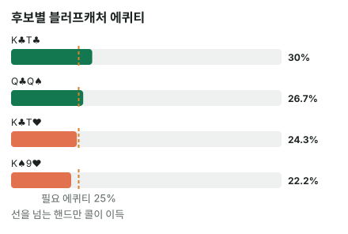

안녕하세요. E01에서 블러프캐처로 콜할 때 내 카드가 상대 밸류를 지우면 좋고, 블러프를 지우면 나쁘다는 걸 셌죠. 오늘은 그 셈을 "어떤 핸드로 콜할까"를 고르는 데 써요.
먼저 두 말을 다시 짚을게요. 블러프캐처는 상대 블러프만 이기고 밸류에는 지는 핸드, 블로커는 내 손에 있어서 상대가 그 카드를 쓰는 콤보를 못 들게 하는 카드예요.
A04의 리버를 다시 꺼낼게요. 그때는 K♣T♣ 하나로 콜·폴드를 정했어요. 오늘은 같은 리버에 Hero 핸드 후보를 네 개 놓고, 무늬 하나·카드 한 장 차이가 콜과 폴드를 어떻게 가르는지 봅니다.
이 글에서 배울 것
- 같은 리버라도 Hero 핸드가 바뀌면 상대 콤보를 처음부터 다시 세야 하는 이유
- 블러프캐처가 본전이 되는 블러프 콤보 수 경계를 구하고, 후보마다 그 경계와 비교하는 법
- 상대 밸류를 지우는 카드가 다른 밸류를 늘릴 수도 있다는 함정
오늘의 핸드 (A04의 리버, 벳 크기만 다름)
Hero (BB · 스택 100BB)
프리플랍
상대(BTN) 2.5BB 오픈 → SB 폴드 → Hero 콜
팟 5.5BB
플랍 · 팟 5.5BB


Hero 체크 → 상대 2.75BB 벳 → Hero 콜
하트 2장이라 상대에게 플러시 드로우가 있을 수 있어요.
턴 · 팟 11BB


Hero 체크 → 상대 4.5BB 벳 → Hero 콜
리버 · 팟 20BB


Hero 체크 → 상대 10BB 벳(하프팟) → Hero는 콜? 폴드?
하트는 안 들어왔어요. 상대 플러시 드로우는 빗나갔어요.
상대가 이 벳을 하는 핸드 (가정 레인지 기준)
A04와 같은 레인지를 가정할게요. 아래 핸드는 모두 항상 이 크기로 벳하고, 이 밖의 핸드로는 벳하지 않는다고 봐요.
- 밸류(K 탑페어를 이기는 핸드): AK, KQ, KJ, JJ, 88
- 블러프(K 탑페어가 이기는 핸드): 하트 플러시 드로우가 빗나간 A♥Q♥·A♥T♥·A♥9♥·A♥6♥·A♥5♥·A♥4♥·Q♥T♥·Q♥9♥·T♥9♥·9♥7♥·7♥6♥·6♥5♥
블러프는 전부 노페어예요. K 페어든 Q 페어든 다 이겨요.
Hero 후보 네 개
같은 자리에 Hero가 이 넷 중 하나를 들었다고 해 볼게요.
| 후보 | 핸드 이름 | 특징 |
|---|---|---|
| K♣T♣ | K 탑페어, T 키커 | A04의 그 핸드 |
| K♣T♥ | K 탑페어, T 키커 | T의 무늬만 하트 |
| K♠9♥ | K 탑페어, 9 키커 | 키커가 하나 낮고 하트 |
| Q♣Q♠ | 포켓 QQ | K 아래 페어 |
결론부터 말할게요. 오늘 가정한 상대라면 K♣T♣·Q♣Q♠는 콜, K♣T♥·K♠9♥는 폴드가 이득입니다.
쇼다운에서는 네 핸드가 이기는 상대·지는 상대가 완전히 같아요. 그런데 결론이 둘로 갈렸어요. 왜 그런지 3단계로 볼게요.
1단계. 기준선: 필요 에퀴티 25%
Hero는 10BB를 내고 원래 팟 20BB와 상대 벳 10BB를 노려요.
필요 에퀴티 = 10(Hero 콜) ÷ (20(원래 팟) + 10(상대 벳) + 10(Hero 콜)) = 10 ÷ 40 = 25%
블러프캐처는 블러프에만 이기니까, 에퀴티는 블러프 ÷ (밸류 + 블러프)예요(E01). 그러니 이 콜은 "상대 벳 4번 중 1번 넘게 블러프인가"를 묻는 결정이에요.
2단계. 후보마다 다시 세기
K♣T♣: A04 그대로
K는 보드에 K♥, Hero 손에 K♣가 있어 남은 K는 2장이에요.
- AK: A 4장 × K 2장 = 8, KQ: K 2장 × Q 4장 = 8, KJ: K 2장 × J 3장 = 6
- JJ·88: 보드에 한 장씩 있어 3씩
- 밸류 8 + 8 + 6 + 3 + 3 = 28콤보, 블러프 12콤보(하트를 하나도 안 쥐었으니 그대로)
12 ÷ (28 + 12) = 12 ÷ 40 = 30%
K♣T♥: T의 무늬만 바뀜
밸류는 K♣T♣와 똑같이 28콤보예요(K♣가 그대로니까). 그런데 T♥가 상대 블러프 중 A♥T♥·Q♥T♥·T♥9♥ 세 개를 지워요. 블러프는 9콤보만 남아요.
9 ÷ (28 + 9) = 9 ÷ 37 = 24.3%
K♠9♥: 9♥가 더 많이 지움
밸류는 역시 28콤보예요(K를 한 장 쥔 건 같으니까). 9♥는 A♥9♥·Q♥9♥·T♥9♥·9♥7♥ 네 개를 지워 블러프가 8콤보예요.
8 ÷ (28 + 8) = 8 ÷ 36 = 22.2%
Q♣Q♠: K를 안 쥐었더니 밸류가 늘어남
여기가 오늘의 함정이에요. Hero가 K를 안 쥐었으니 상대가 쥘 수 있는 K가 3장이 돼요.
- AK: 4 × 3 = 12콤보, KJ: 3 × 3 = 9콤보로 오히려 늘어요
- 대신 Q 두 장을 Hero가 쥐어서 KQ는 3 × 2 = 6콤보로 줄어요
- JJ·88은 3씩 그대로 → 밸류 12 + 6 + 9 + 3 + 3 = 33콤보
하트는 하나도 안 쥐었으니 블러프는 12콤보 그대로예요.
12 ÷ (33 + 12) = 12 ÷ 45 = 26.7%
💡 빨리 세는 팁: K를 쥐면 상대 K는 2장(AK 8·KQ 8·KJ 6), K를 안 쥐면 3장(AK 12·KJ 9). 상대 블러프에 쓰이는 카드(오늘은 하트)를 쥐었는지는 따로 확인

3단계. 비교하고 돈으로 바꾸기
| Hero 핸드 | 상대 밸류 | 상대 블러프 | 블러프캐처 에퀴티 | 콜 손익 |
|---|---|---|---|---|
| K♣T♣ | 28콤보 | 12콤보 | 30% | +2BB |
| Q♣Q♠ | 33콤보 | 12콤보 | 26.7% | 약 +0.67BB |
| K♣T♥ | 28콤보 | 9콤보 | 24.3% | 약 −0.27BB |
| K♠9♥ | 28콤보 | 8콤보 | 22.2% | 약 −1.11BB |
K♣T♣를 풀어 보면 이래요.
콜 손익 = 0.3 × 30(이기면 버는 돈: 팟 20 + 상대 벳 10) − 0.7 × 10(지면 잃는 콜) = 9 − 7 = +2BB
K♣T♥는 같은 식에 24.3%를 넣으면 돼요.
콜 손익 = (9/37) × 30 − (28/37) × 10 = 7.3 − 7.57 = 약 −0.27BB
이게 무슨 뜻이냐면
같은 K-T, 같은 키커인데 T♥는 상대 블러프 3콤보를 지워서 25% 선 아래로 내려갔어요. 반대로 K보다 약한 QQ는 상대 밸류가 늘어났는데도, 블러프를 하나도 안 지워서 선 위에 남았어요.
왜 그럴까: 블러프캐처의 값은 "핸드 힘"이 아니라 "상대 콤보 구성"이에요
네 핸드는 쇼다운에서 같은 일을 해요
오늘 가정에서 네 후보는 밸류에 다 지고, 블러프에 다 이겨요. Q♣Q♠가 K 페어보다 약하다는 사실은 이 판에서 아무것도 안 바꿔요. 상대 레인지에 QQ가 이기고 K-T가 지는 핸드도, 그 반대도 없거든요.
그러니 이 판에서 핸드끼리 다른 건 딱 하나, 손에 쥔 두 장이 상대 레인지에서 무엇을 지우느냐뿐이에요.
경계선: 블러프가 몇 콤보면 본전일까
필요 에퀴티 25%를 콤보로 바꿔 볼게요. 상대 벳 4번 중 1번이 블러프면 나머지 3번은 밸류죠. 그러니 블러프 : 밸류 = 1 : 3, 블러프가 밸류의 1/3이면 본전이에요.
이걸 어떤 벳 크기에도 쓸 수 있게 일반형으로 쓰면 이래요.
본전 블러프 = 밸류 × 필요 에퀴티 ÷ (1 − 필요 에퀴티)
하프팟: 28 × 25 ÷ 75 = 9.33
필요 에퀴티는 벳 크기가 정하니까, 이 식에서 경계를 움직이는 건 벳 크기와 밸류 수 둘뿐이에요.
- 밸류가 28콤보인 K 핸드: 블러프 28 ÷ 3 = 9.33콤보가 경계
- 밸류가 33콤보인 QQ: 블러프 33 ÷ 3 = 11콤보가 경계
이렇게 보면 결론이 한눈에 보여요. K♣T♣는 블러프 12로 경계 9.33 위, K♣T♥는 9로 경계 바로 아래, K♠9♥는 8로 더 아래, QQ는 12로 경계 11 위예요.
블로커는 "경계"와 "실제" 양쪽을 움직여요
- 밸류를 지우거나 늘리면 → 경계가 움직여요(QQ는 밸류가 늘어 경계가 11로 올라감)
- 블러프를 지우면 → 실제 블러프가 줄어요(T♥, 9♥)
K♣T♥가 폴드가 된 건 T♥가 실제 블러프를 12에서 9로 깎아, 경계 9.33 밑으로 밀었기 때문이에요. 단 3콤보 차이였죠. 결정이 필요 에퀴티 근처에 있을 때는 이 정도 차이로도 뒤집혀요.
자주 하는 실수
실수 1. "키커가 같으니 같은 핸드" K♣T♣와 K♣T♥는 쇼다운 힘이 똑같아요. 그런데 오늘 에퀴티는 30%와 24.3%로 갈렸고, 하나는 +2BB 콜, 하나는 −0.27BB 콜이었어요. 그러니 리버 블러프캐처는 무늬까지 보고, 그 카드가 상대 블러프에 쓰이는지 확인해야 해요.
실수 2. "더 센 핸드가 더 좋은 콜" K♠9♥는 K 탑페어로 Q♣Q♠보다 세요. 그런데 오늘 콜 손익은 QQ가 +0.67BB, K♠9♥가 −1.11BB였어요. 상대 블러프를 네 개 지운 게 컸어요. 바르게 비교하려면 "남은 블러프가 이 핸드의 경계(밸류 ÷ 3)보다 많은가"를 봐요. 남은 블러프 수만 보면 안 돼요. K♣T♣와 Q♣Q♠는 블러프가 똑같이 12콤보인데, 경계가 9.33과 11로 달라 에퀴티도 30%와 26.7%로 달랐거든요.
실수 3. 밸류를 지우는 카드만 보고 끝내기 "Q를 두 장 쥐었으니 KQ가 줄어 좋다"까지만 보면 반만 본 거예요. K를 안 쥐었다는 건 상대 AK·KJ가 늘었다는 뜻이라, 밸류는 28이 아니라 33콤보였어요. Hero 핸드가 바뀌면 밸류·블러프를 처음부터 다시 세는 게 가장 안전해요.
"실전에서는 상대 레인지를 이렇게 정확히 모르는데, 콤보 셈이 쓸모 있나요?"
좋은 질문이에요. 맞아요, 실전의 상대 레인지는 오늘처럼 깔끔하게 정해지지 않아요. 그래도 이 셈이 쓸모 있는 이유가 있어요.
블로커가 결론을 뒤집는 건 경계 근처에서뿐이에요. K♣T♥는 블러프 9콤보로 경계 9.33에 거의 붙어 있었죠. 반대로 결정이 경계에서 멀면, 상대 레인지를 조금 틀리게 잡아도 블로커 몇 콤보로는 안 뒤집혀요. 그러니 실전에서는 "이 콜이 원래 아슬아슬한가?"를 먼저 보고, 아슬아슬할 때만 무늬까지 세면 돼요.
숫자가 뒤집히는 지점
- K를 한 장 쥔 핸드(밸류 28)는 블러프 9.33콤보가 선이에요. Hero의 하트가 원래 블러프 12콤보를 이 선 밑으로 깎는지가 기준이에요
- QQ처럼 K를 안 쥔 핸드는 밸류가 33으로 늘어 선이 11콤보예요. 같은 블러프 12콤보라도 선이 높아져서, 더 적게 지워도 선 밑으로 내려갈 수 있어요
선생님의 한마디
리버에 블러프캐처로 콜을 고민할 때는 이 순서로 봐요.
- 리버에 블러프캐처로 벳을 맞으면, 먼저 이 콜이 아슬아슬한지 필요 에퀴티로 가늠하기
- 아슬아슬하면 보드에서 빗나간 드로우의 무늬를 확인하고, 내 두 장에 그 무늬가 있는지 보기
- 있으면 그 카드가 지우는 블러프를 세어 경계와 다시 비교하기
연습 문제 (같은 리버, 같은 상대 가정)
학습툴 [콤보 분류 보기]는 준비 중이에요. 직접 세어 보세요.
문제 1. 하프팟 10BB 그대로, Hero가 K♦7♥라면 상대 블러프는 몇 콤보일까요? 콜일까요, 폴드일까요?
정답 보기
7♥가 9♥7♥·7♥6♥ 두 개를 지워 블러프 10콤보. 밸류는 K를 한 장 쥐었으니 28콤보 그대로예요. 에퀴티 = 10 ÷ (28 + 10) = 10 ÷ 38 = 26.3% > 25% → 콜, 한 번에 약 +0.53BB. 하트를 쥐어 블러프를 지웠지만 2콤보뿐이라 경계(9.33콤보) 위에 남았어요. "하트를 쥐면 폴드"가 아니라 몇 콤보를 지우나예요.
문제 2. 하프팟 10BB 그대로, Hero가 Q♣Q♠ 대신 Q♥Q♦라면?
정답 보기
밸류는 K를 안 쥐었으니 33콤보로 Q♣Q♠와 같아요. 그런데 Q♥가 A♥Q♥·Q♥T♥·Q♥9♥ 세 개를 지워 블러프가 9콤보예요. 에퀴티 = 9 ÷ (33 + 9) = 9 ÷ 42 = 21.4% < 25% → 폴드, 콜하면 약 −1.43BB. 같은 QQ도 Q♥ 한 장 때문에 결론이 뒤집혀요.
문제 3. 이번엔 상대가 15BB를 벳했어요(Hero는 A04의 K♣T♣). 콜일까요? Q♣Q♠라면요?
정답 보기
필요 에퀴티 = 15 ÷ (20 + 15 + 15) = 15 ÷ 50 = 30%.
- K♣T♣: 에퀴티 30%로 딱 본전(콜 손익 0BB). 블러프 12콤보가 경계(28 × 30 ÷ 70 = 12)와 정확히 같아요
- Q♣Q♠: 26.7% < 30% → 폴드, 콜하면 약 −1.67BB 벳이 커지면 경계가 올라가서, 하프팟에서 콜이던 핸드가 하나씩 떨어져 나가요.
핵심 정리
- 리버 블러프캐처의 값은 핸드 힘이 아니라 상대 콤보 구성이 정해요. 쇼다운 힘이 같은 핸드도 결론이 갈릴 수 있어요
- 본전 블러프 = 밸류 × 필요 에퀴티 ÷ (1 − 필요 에퀴티). 하프팟이면 밸류의 1/3
- 블로커는 두 가지를 움직여요: 블러프 카드는 실제 블러프를, 밸류 카드는 경계를
- Hero 핸드가 바뀌면 밸류·블러프를 처음부터 다시 세요. 한쪽만 고치면 틀려요
정리하며
오늘은 A04의 리버에 하프팟 벳을 놓고, Hero 후보 네 개의 콜을 비교했어요.
K♣T♣는 블러프 12콤보로 30%, T의 무늬만 바뀐 K♣T♥는 블러프가 9콤보로 줄어 24.3%였어요. K보다 약한 Q♣Q♠는 상대 밸류가 33콤보로 늘었지만 블러프를 안 지워 26.7%로 콜이 남았죠. 네 핸드는 쇼다운 힘이 같은 상대를 이기고 졌지만, 손에 쥔 두 장이 지우는 콤보가 달라 결론이 갈렸어요.
오늘 하나만 가져가면 돼요. 리버 블러프캐처를 고를 때는 "이 핸드가 얼마나 센가"보다 "이 두 장이 상대의 무엇을 지우나"를 먼저 세세요.
다음 글 E26에서는 콤보를 직접 세는 대신 헤즈업 솔버가 낸 결과를 읽는 법을 봐요. 솔버 표의 빈도·벳 크기·섞는 전략을 어떻게 읽어야 하는지 다뤄요.
AI 작성 · 숫자는 계산 검증 (콤보는 실제 카드로 하나씩 셈) · 가정 레인지 기준 (솔버 결과 아님) · 리버 마지막 결정이라 콜 손익이 최종 결과